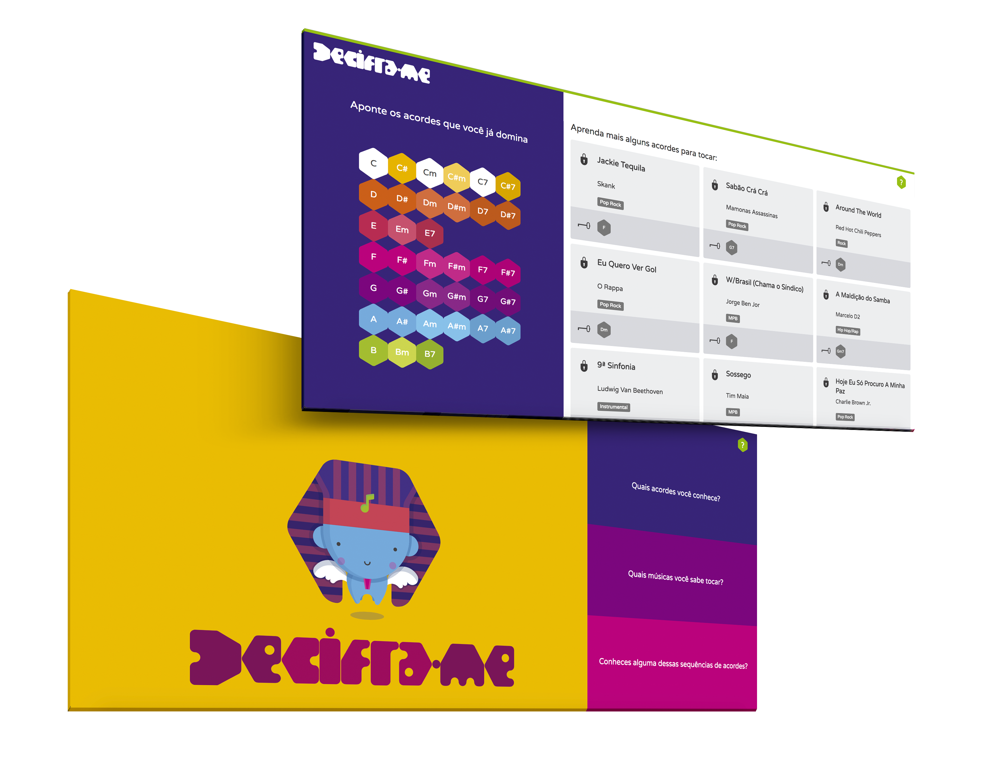
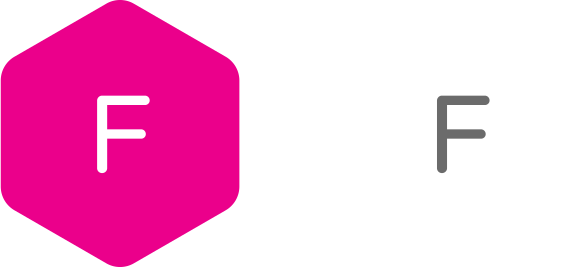

3.4 Usability
Decifra-me is meant to be a game application, therefore each functionality is presented its own page, indicated by one the theme colors - pink, purple and blue.
Gamification tools - In order to engage the user, incentivizing them to learn even more chords and, consequently, learn new songs;


Feedback when the user presses a button or chord - So that the user feels good about pressing. The songs are presented as the user is search the chords - So that the user does not wait for the complete search to see the options.
Loading bar - To avoid that the user feels anxious. Musical style filter - To ease the search.